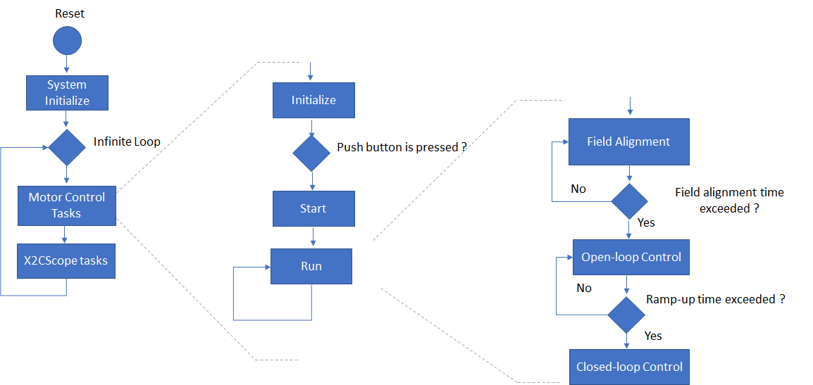

The project implements an Encoder based sensored Field Oriented Control ( FOC ) algorithm on SAME70 32-bit micro-controller to regulate the speed of the PMSM motor. For details refer application note  AN2757. The following section describes briefly about the FOC algorithm, and corresponding software design and implementation on MCLV2 development board.
AN2757. The following section describes briefly about the FOC algorithm, and corresponding software design and implementation on MCLV2 development board.
Field Oriented Control is the technique used to achieve the decoupled control of torque and flux. This is done by transforming the stator current quantities (phase currents) from stationary reference frame to torque and flux producing currents components in rotating reference frame using mathematical transformations. The Field Oriented Control is achieved by performing following steps:
- Measure the motor phase currents.
- Transform them into the two phase system (a, b) using Clarke transformation.
- Calculate the rotor position angle.
- Transform stator currents into the d,q-coordinate system using Park transformation.
- The stator current torque (iq) and flux (id) producing components are controlled separately by the controllers.
- The output stator voltage space vector is transformed back from the d,q-coordinate system into the two phase system fixed with the stator by inverse Park transformation.
- Using the space vector modulation, the output three-phase voltage is generated.
The phase currents are measured using two shunt resistors connected to Phase U and Phase V inverter legs respectively. The W phase current is determined based on Kirchoff's current law.
The rotor position angle is determined from Quadrature encoder. The details of the quadrature encoder interface can be referred from device datasheet.
The following block diagram shows the software realization of the FOC algorithm.

The following figure shows the various state machine of the the motor control software.

Brief description of the tasks undertaken in various motor control states are as follows-
Initialize:
In this state, following tasks are performed-
• Initialization/ configuration of NVIC, AFEC, PWM etc. motor control micro-controller peripherals for generation of periodic ADC triggers and ADC conversion interrupt.
• Current Offset measurement and calibration.
• Initialize PI controller parameters for speed and current control loops.
Start:
In this state, the motor control state variables reset and periodic ADC conversion interrupt is enabled.
Run:
In this state, the motor starts spinning. The below flow chart shows the tasks performed in run state-


In run state, two threads are executed- Main task thread and ADC Interrupt task thread. The current control is carried out in the ADC interrupt task thread, while the speed control is carried out in the main task thread. Hence the ADC interrupt cycle indicates the current control frequency. To maximum torque per ampere in the motor drive, a field alignment mode is integrated with the FOC algorithm. Brief description of field alignment and Close control is as follows-
• Field Alignment:
The quadrature encoder is an incremental encoder. Hence it is important to know the initial position of the rotor to maintain orthogonal rotor and stator flux. To achieve this, q-axis is excited with an small open loop current while d-axis is excited with zero current. After the initial alignment, electrical angle is shifted by 90 degrees to obtain maximum torque.
• Close Loop Control:
After the alignment, the close loop control by using FOC algorithm is done.
Stop:
In this state, the PWM channels are disabled thereby stopping the motor. The periodic ADC trigger and conversion interrupt is disabled.
The FOC algorithm is used for wide range of PMSM motors used across different application fields. In order to get the optimal control of the PMSM motor, both the motor specific parameters and application parameters has to be updated in the software. The following section describe how to update both motor and application specific parameters in the the project.
1. Setting motor control PWM frequency:
The PWM controller frequency ( in Hz ) can be configured by setting following macro in "userparams.h" file.
This frequency should be same as the frequency configured in PWM peripheral in the MHC.
|
Macro |
Description |
Unit |
|
PWM_FREQUENCY |
Current controller and PWM frequency |
Hertz |
2. Setting motor specific -parameter:
Set the motor following motor parameters in "userparams.h" file.
|
Macro |
Description |
Unit |
|
MOTOR_PER_PHASE_RESISTANCE |
Motor per phase resistance |
Ohm |
|
MOTOR_PER_PHASE_INDUCTANCE |
Motor per phase inductance |
Henry |
|
MOTOR_BEMF_CONST_V_PEAK_LL_KRPM_MECH |
Back EMF constant |
Vpk(L-L)/KRPM |
|
NUM_POLE_PAIRS |
Number of pole pairs |
|
|
RATED_SPEED_RPM |
Rated mechanical speed of the motor |
rpm |
|
MAX_SPEED_RPM |
Maximum mechanical speed of the motor |
rpm |
|
ENCODER_PULSES_PER_REV |
Number of encoder pulses per mechanical revolution |
|
3. Setting PI Controller parameters:
Depending on the type of motor used, and the corresponding application PI controller parameters has to be updated in "userparams.h" file.
Speed Control loop PI controller parameters:
|
Macro |
Description |
|
SPEEDCNTR_PTERM |
Proportional gain of speed control loop |
|
SPEEDCNTR_ITERM |
Integral gain of speed control loop |
|
SPEEDCNTR_CTERM |
Anti-windup term of speed control loop |
|
SPEEDCNTR_OUTMAX |
Maximum controller output of speed control loop |
Id current Control loop PI controller parameters:
|
Macro |
Description |
|
D_CURRCNTR_PTERM |
Proportional gain of Id current control loop |
|
D_CURRCNTR_ITERM |
Integral gain of Id current control loop |
|
D_CURRCNTR_CTERM |
Anti-windup term of Id current control loop |
|
D_CURRCNTR_OUTMAX |
Maximum controller output of Id current control loop |
Iq current Control loop PI controller parameters:
|
Macro |
Description |
|
Q_CURRCNTR_PTERM |
Proportional gain of Iq current control loop |
|
Q_CURRCNTR_ITERM |
Integral gain of Iq current control loop |
|
Q_CURRCNTR_CTERM |
Anti-windup term of Iq current control loop |
|
Q_CURRCNTR_OUTMAX |
Maximum controller output of Iq current control loop |
The software also integrates features to enable user to configure/ tune their motor drive with ease. Some of them are listed as follows-
|
Macro |
Description |
|
TORQUE_MODE |
This a special mode where the speed control loop can be bypassed. The input of potentiometer is scaled and is fed directly to the q-axis PI controller. Torque mode enable switch (0 - Disable, 1 - Enable ) |
|
Microchip 32-bit Motor Control
|